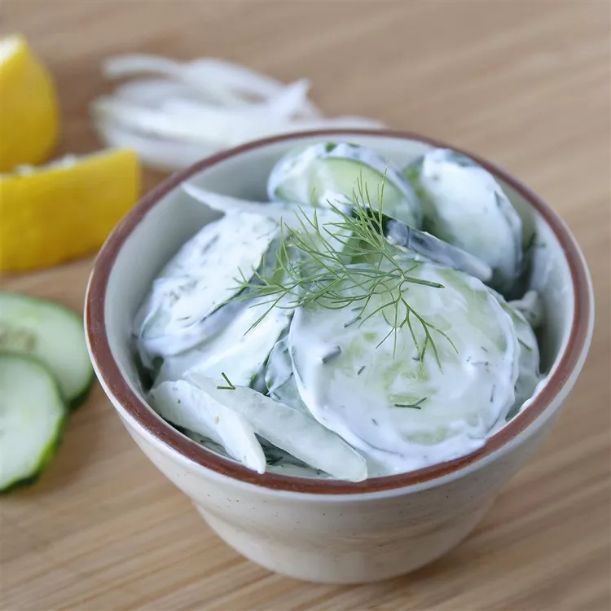

Cucumber Dill Salad

Description
This is a recipe for a Polish-style cucumber dill salad. Delicious any time but especially in summer.
Ingredients
- Cucumbers
- Sour Cream
- Lemon Juice
- Salt
- Pepper
- Chopped Fresh Dill
Steps
- Mix sour cream with lemon juice and dill
- Slice cucumbers and add to sour cream mix
- Add salt and pepper and stir together
- Optionally, chill for 1 hour before serving